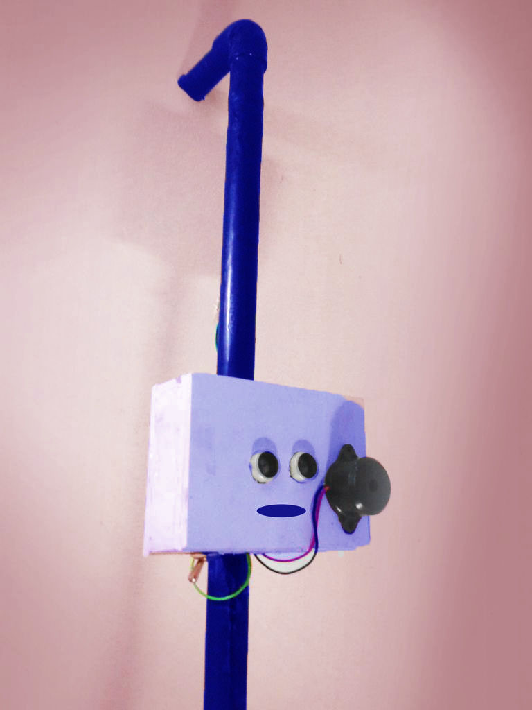
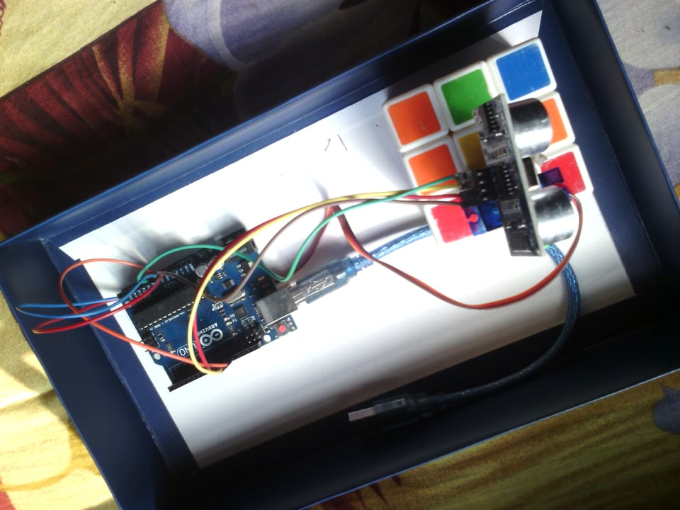

I Have also done Some Greate projects in arduino And C++. These projects were done with Tasnuva Tabassum and Nusrat Tasnim
An Arduino project for blind people, to detect obstacles Using Ultra-Sonic waves
Radar thar can move 180 degree and gives obstacle ouput in program scree
